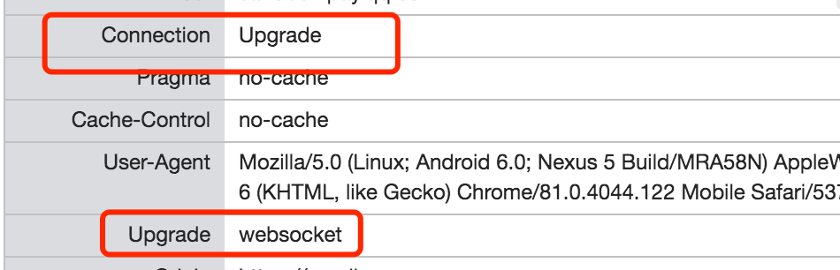

一般是工作中遇到问题，不太会解决后立即总结，而是解决后在记录本里写一到两个关键字，过了一个月以后再一起总结，这样会有个加固记忆的过称。(为自己的偷懒找个合适的借口🐩🌶)
关于 csp
好几个月之前定位一个同事遗留下来的项目，当时是在手机上，抓包看发现某个请求怎么都发布出去，突然发现有个report/csp这个请求。瞬间明白了，可能是服务器限制了csp。
本地使用whisle 的`xxx.qq.com disable://csp一下就解决了。这件事情告诉了我知识储备有多么重要，如果不是因为去年去了解xss, 无意间接触了下csp的限制以及了解了他的report-uri，估计也不会这么快定位出来问题。
什么是csp?
CSP 的实质就是白名单制度，开发者明确告诉客户端，哪些外部资源可以加载和执行，等同于提供白名单。它的实现和执行全部由浏览器完成，开发者只需提供配置。
csp可以做什么事情？
- csp可以防止xss
- 数据包嗅探攻击:除限制可以加载内容的域，服务器还可指明哪种协议允许使用；比如 (从理想化的安全角度来说)，服务器可指定所有内容必须通过HTTPS加载。
csp 为什么可以防止xss?
CSP 的主要目标是减少和报告 XSS 攻击 ，XSS 攻击利用了浏览器对于从服务器所获取的内容的信任。恶意脚本在受害者的浏览器中得以运行，因为浏览器信任其内容来源，即使有的时候这些脚本并非来自于它本该来的地方。
CSP通过指定有效域——即浏览器认可的可执行脚本的有效来源——使服务器管理者有能力减少或消除XSS攻击所依赖的载体。一个CSP兼容的浏览器将会仅执行从白名单域获取到的脚本文件，忽略所有的其他脚本 (包括内联脚本和HTML的事件处理属性)。
作为一种终极防护形式，始终不允许执行脚本的站点可以选择全面禁止脚本执行。
csp 怎么使用？
1、HTTP 头信息的Content-Security-Policy
2、通过网页的标签
我上面遇到的问题，是运维同事设置的 HTTP 头里不包括了之前的请求导致的。
nginx 支持 websocket 反向代理
场景：服务器上起了某个websocket服务，需要反向代理到websocket对应端口。仅仅这样无法完成转发，还需要nginx支持websocket。它表示它表明是websocket连接进入的时候，进行一个连接升级将http连接变成websocket的连接。
1 | proxy_set_header Upgrade $http_upgrade; |
完整的可以为：1
2
3
4
5
6
7
8
9
10
11
12server {
listen 80;
server_name 域名;
location / {
proxy_pass http://127.0.0.1:51015/; // 代理转发地址
proxy_http_version 1.1;
proxy_read_timeout 3600s; // 超时设置
// 启用支持websocket连接
proxy_set_header Upgrade $http_upgrade;
proxy_set_header Connection "upgrade";
}
}
如果不设置，服务器端可能会返回给浏览器端错误码：426。
扩展：一般情况下，发起请求时，协议升级请求总是由客户端发起的。请求时需要添加两项额外的header：
Connection: Upgrade
设置 Connection 头的值为 “Upgrade” 来指示这是一个升级请求.
Upgrade: protocols
Upgrade 头指定一项或多项协议名，按优先级排序，以逗号分隔。

如果服务器决定升级这次连接，就会返回一个101 Switching Protocols响应状态码，和一个要切换到的协议的头部字段Upgrade。
服务在发送 101 状态码之后，就可以使用新的协议，并可以根据需要执行任何其他协议指定的握手。实际上，一旦这次升级完成了，连接就变成了双向管道。并且可以通过新协议完成启动升级的请求。
如果不支持这个升级这个协议，就可能发送426 Upgrade Required。表明服务器拒绝处理客户端使用当前协议发送的请求，但是可以接受其使用升级后的协议发送的请求。此时可以检查下nginx是否配置了支持websocket。
vconsole vs eruda
两个都用过，更喜欢 vconsole, 下面是eruda的用法（喜欢直接内嵌页面，不喜欢用npm）：1
2
3
4
5
6
7
8
9
10(function() {
var src = '//cdn.bootcss.com/eruda/1.5.2/eruda.min.js';
if (
!/debug=1/.test(window.location) &&
localStorage.getItem('active-eruda') != 'true'
)
return;
document.write('<scr' + 'ipt src="' + src + '"></scr' + 'ipt>');
document.write('<scr' + 'ipt>eruda.init();</scr' + 'ipt>');
})();
vconsole, 一般也会用url参数加个开关。1
2
3
4
5
6<head>
<script src="path/to/vconsole.min.js"></script>
<script>
var vConsole = new VConsole()
</script>
</head>
小程序的一次性订阅和长期订阅
小程序以前的策略是通过模板消息来发送服务通知。并且限定是在支付后或者提交表单以后。此项后面废除。改为了订阅消息。
功能细节：
- 订阅消息推送位置：服务通知
- 订阅消息下发条件：用户自主订阅
- 订阅消息卡片跳转能力：点击查看详情可跳转至该小程序的页面
使用方法：
- 获取模板 ID
- 获取下发条件
wx.requestSubscribeMessage - 调用接口下发订阅消息
subscribeMessage.send
使用区分：
- 一次性订阅消息：用户订阅一次后，开发者可下发一条消息，不限时间。若用户勾选了“总是保持以上选择，不再询问”且点击了允许，那么以后都默认同意订阅这条消息。用户不再做多次选择，开发者也避免了更繁琐的提醒。
- 长期性订阅消息：用户订阅一次后，可长期下发多条消息。目前长期性订阅消息向政务、医疗、交通、金融、教育等线下公共服务开放，后续将综合评估行业需求和用户体验持续完善。（长期订阅消息只针对特定行业开放，所以普通开发者并无法使用）。
总结
今天是星期六，下周五一，明天是星期天，需要补一天班。